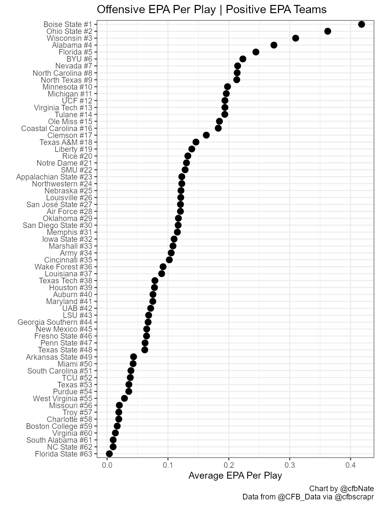
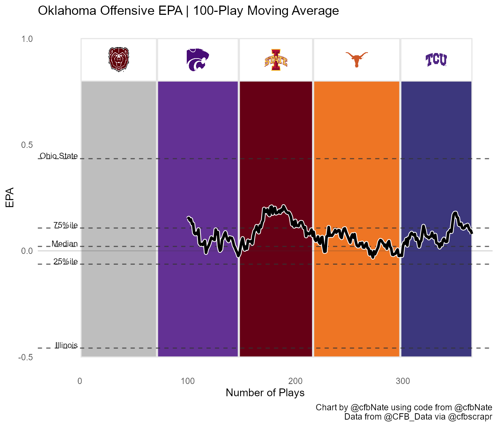

Rolling-EPA-Graph.rmdThis vignette will use data from the cfbscrapR package to create a moving average graph of offensive EPA over the course of a season. This lets us visualize how a team’s performance has changed over time and compare that performance to other teams around the country.
You’ll want to make sure the following packages are installed. Run these lines without the “#” to install them. If you have already installed these packages you can skip this step.
#install.packages('tidyverse') #install.packages("devtools") #install.packages("zoo") #install.packages("ggimage") #devtools::install_github("saiemgilani/cfbscrapR")
In the interest of time, I’m going to avoid a fresh call to the API here and I’m going to use a copy of the play by play data that is saved on github. This method only takes about 30 seconds. The result will be a dataframe that contains ALL of the play by play data for ALL teams in 2020.
t <- tempfile() download.file("https://raw.githubusercontent.com/saiemgilani/cfbscrapR-data/master/data/rds/pbp_players_pos_2020.rds",t) pbp_2020 <- readRDS(t)
We can use the cfb_team_info() function to pull information about each FBS school including their logo, color, and abbreviation. We’re going to take a subset of the cfb_team_info data and clean it up for use in our graphs later on.
team_info = cfb_team_info(year = 2020) team_colors_logos = team_info %>% select(school, abbreviation, color, logos, alt_color) %>% unnest(logos) %>% group_by(school) %>% slice(1) %>% ungroup()
Let’s create a basic overview of offensive EPA per play. We’ll start by creating a dataframe listing all 130 FBS teams from best to worst based on their average EPA per play across all games played.
off_epa = pbp_2020 %>% filter(rush == 1 | pass == 1) %>% group_by(offense_play, offense_conference) %>% summarize(off_epa = mean(EPA, na.rm = TRUE)) %>% arrange(desc(off_epa)) %>% rename(Team = offense_play) %>% filter(!is.na(offense_conference)) %>% ungroup() %>% mutate(Rank = row_number()) %>% mutate(TeamRank = paste0(Team, " #", Rank))
We can use the head() function to take a quick peak at what our new dataframe looks like. The teams at the top should not be surprising. Remember, EPA is not adjusted for the strength of opponent. It is purely a measure of how teams perform on the field (like yards, but better).
head(off_epa)
## # A tibble: 6 x 5
## Team offense_conference off_epa Rank TeamRank
## <chr> <chr> <dbl> <int> <chr>
## 1 Ohio State Big Ten 0.434 1 Ohio State #1
## 2 Michigan Big Ten 0.388 2 Michigan #2
## 3 Alabama SEC 0.325 3 Alabama #3
## 4 Wisconsin Big Ten 0.310 4 Wisconsin #4
## 5 Boise State Mountain West 0.291 5 Boise State #5
## 6 Florida SEC 0.281 6 Florida #6Ok, now let’s start to visualize the data beyond the top few schools. Let’s graph all the teams that have a positive EPA on the year.
off_epa %>% filter(off_epa > 0) %>% ggplot(aes(x = reorder(TeamRank, off_epa), y=off_epa)) + geom_point(size = 3) + coord_flip() + theme_bw() + ylab("Average EPA Per Play") + xlab("") + labs(title = "Offensive EPA Per Play | Positive EPA Teams", caption = "Chart by @cfbNate Data from @CFB_Data via @cfbscrapr")

So far, so good, but we came here to build a moving average chart! Let’s proceed by defining the team of interest and the moving average window by editing the cell block below. I like to use 100 plays when looking at a full season to smooth out as much of the variability as possible, but for a mid-season view 50 plays or even 25 plays might be more appropriate. Play around!
team = "Oklahoma" ma_plays = 100
Now that we have defined our team of interest, we can prepare the data for this specific team. We’re going to create a dataframe called team_off that is subsetted from our full season play by play data. This new dataframe will be specific to our team of interest and it will add fields for the moving average and the play count.
team_off = pbp_2020 %>% filter(offense_play == team) %>% filter(rush == 1 | pass == 1) %>% filter(!is.na(EPA)) %>% mutate(cu_epa=cummean(EPA), #this field is not used in this vignette but it could be substituted later to graph the cumulative EPA ma_epa=rollapply(EPA,ma_plays,mean,align='right',fill=NA), play_count = row_number(), week_team = paste0("WK", ifelse(week > 9, week, paste0(0,week)), " ", defense_play))
We’re going to graph different background tiles for each opponent so we need to define where one opponent stops and another one begins.
team_off_play_start = team_off %>% group_by(week_team) %>% slice(1) %>% select(defense_play, week_team, play_count) %>% rename(play_start = play_count, team = defense_play) team_off_play_stop = team_off %>% group_by(week_team) %>% filter(row_number() == n()) %>% select(week_team, play_count) %>% rename(play_stop = play_count)
We’re going to add the opponent’s logo in the middle of each background tile, so we need to define the midpoint of each background tile as well.
team_off_start_stop = team_off_play_start %>% left_join(team_off_play_stop, by = "week_team") %>% mutate(midpoint = (play_start + play_stop)/2)
We need to make a simple vector that says how many total plays are in our team_off dataframe.
play_count = max(team_off$play_count)
Next we are going to update our background tile dataframe to include the color info that we pulled earlier. FCS color data is not available, so we will default those to gray.
team_off_start_stop = team_off_start_stop %>% left_join(team_colors_logos, by = c("team" = "school")) %>% mutate(color = replace_na(color,"gray")) %>% select(team, week_team, play_start, play_stop, midpoint, color)
Are we ready to graph yet? Just a few more steps! We need a named vector to get the right colors on those background tiles.
team_colors <- as.character(team_off_start_stop$color) names(team_colors) <- as.character(team_off_start_stop$team)
Now we need to pull in an alternate source of team logos that includes FCS schools. Then we’ll join that new table of logos with our background tile dataframe.
all_logos = read_csv("https://raw.githubusercontent.com/natemanzo/cfb_data/master/_team_logos.csv") team_off_start_stop = team_off_start_stop %>% left_join(all_logos, by = c("team" = "school"))
Almost done! The last thing we need is your signature to go in the caption of the graph. You can use your twitter handle or your real name here.
signature = "@cfbNate"
*To be said in an extremely Power Rangers voice
The beginning of the line graph will depend on the ma_plays variable that you defined earlier. Dashed lines indicating the EPA/play of the 25th percentile, median, 75th percentile, and top and bottom teams in the country are drawn on the graph to show context for how the team of interest compares to the rest of the country.
graph_team_off = ggplot() + geom_rect(data = team_off_start_stop, aes(xmin = play_start, xmax = play_stop, fill = team, ymin = -.5, ymax = .9), color = "gray90") + geom_rect(data = team_off_start_stop, aes(xmin = play_start, xmax = play_stop, ymin = .8, ymax = 1), color = "gray90", fill = "white") + scale_fill_manual(values = team_colors) + geom_hline(yintercept = quantile(off_epa$off_epa), linetype = 2, color = "gray20", alpha = .8) + geom_hline(yintercept = 0, linetype = 1, color = "gray20", alpha = .2) + geom_image(data=team_off_start_stop,aes(x=midpoint,y=.9,image=logo), asp = 16/9, size = .05) + annotate(x = -2, y = quantile(off_epa$off_epa)[1], geom = "text", size = 3, hjust = "right", vjust = 0, label = off_epa %>% slice(n()) %>% pull(Team)) + annotate(x = -2, y = quantile(off_epa$off_epa)[2], geom = "text", size = 3, hjust = "right", vjust = 0, label = "25%ile") + annotate(x = -2, y = quantile(off_epa$off_epa)[3], geom = "text", size = 3, hjust = "right", vjust = 0, label = "Median") + annotate(x = -2, y = quantile(off_epa$off_epa)[4], geom = "text", size = 3, hjust = "right", vjust = 0, label = "75%ile") + annotate(x = -2, y = quantile(off_epa$off_epa)[5], geom = "text", size = 3, hjust = "right", vjust = 0, label = off_epa %>% slice(1) %>% pull(Team)) + geom_line(data = team_off, aes(x = play_count, y = ma_epa), color = "white", size = 2) + geom_line(data = team_off, aes(x = play_count, y = ma_epa), size = 1.25) + theme_minimal() + theme(panel.grid = element_blank()) + theme(legend.position = "none") + ylab("EPA") + xlab("Number of Plays") + labs(title = paste0(team," Offensive EPA | ",ma_plays,"-Play Moving Average"), caption = paste0("Chart by ",signature," using code from @cfbNate Data from @CFB_Data via @cfbscrapr")) + coord_cartesian(xlim = c(-20, play_count), # This leaves room for the labels over the dashed lines clip = 'off') # This keeps the labels from disappearing graph_team_off

Lastly, you can save your graph to your working directory by running the line below. PC users will notice the saved graphic will have a higher resolution and less pixelization than the graphic generated above.
Reminder: You can always use getwd() to find out what your current working directory is if you’re not sure.
ggsave(graph_team_off, filename = paste0("off_epa_rolling_",team,".png"), dpi = 300, type = "cairo", width = 10, height = 7, units = "in")
I hope you found this useful! As always, thanks to @CFB_Data and the @cfbscrapR team for making this possible. And shout out to folks like Parker Fleming and Meyappan Subbaiah for their feedback, advice, and encouragement while refining the look of this visualization. Tag me in any of these graphs you post on twitter and I’ll share them as much as possible.